CARA MEMBUAT DAN HOSTING JAVA SERVLET DENGAN OPENSHIFT
A.Membuat Aplikasi Baru di OPENSHIFT
1.Login ke akun openshift kita, lalu klik add aplication
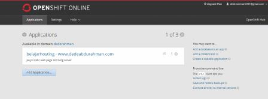2.Pilih aplikasi yang akan digunakan, kita akan menggunakan Tomcat 7
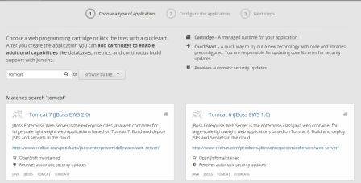3.Beri nama aplikasi kita, misal perpustakaan-dederahman.rhcloud.com
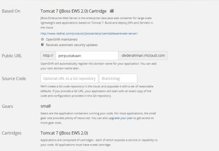4.Masukkan public key kita, jika belum ada
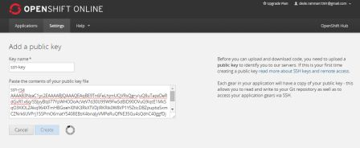B.Membuat Aplikasi Java Servlet
1.Clone aplikasi kita ke komputer
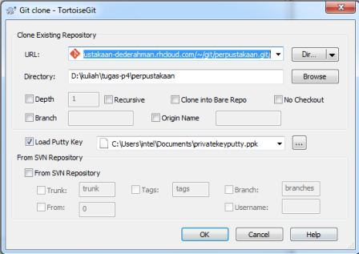2. Coba aplikasi OPENSHIFT kita , masuk ke alamat http://perpustakaan-dederahman.rhcloud.com
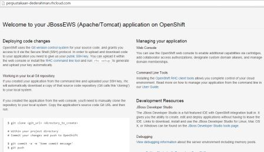3.Ganti index.html
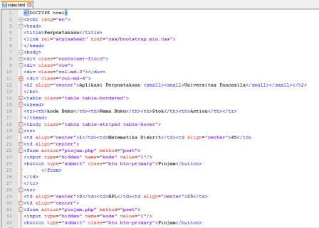4.Push kembali ke OPENSHIFT
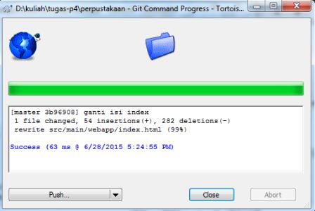 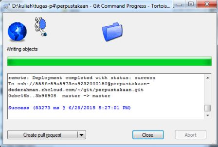
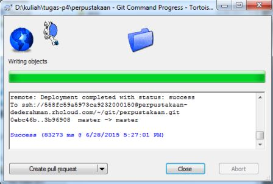
5.Setelah sukses, coba kembali aplikasi kita
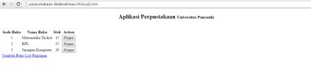6.Supaya lebih menarik bisa kita tambahkan css untuk tampilannya
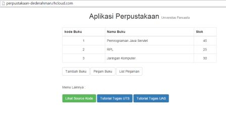B.Kelola Domain
1.Untuk menggunakan domain kita, kelola dns kita
Masuk ke menu domain, pilih kelola dns, pada menu dns masukkan alamat OPENSHIFT kita sebagai CNAME ( alias )
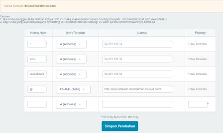Sekarang barulah website kita jadi dan bisa diakses
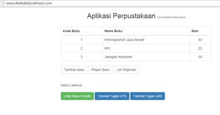